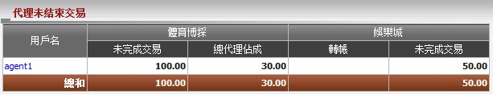
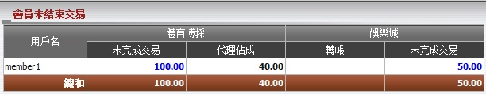
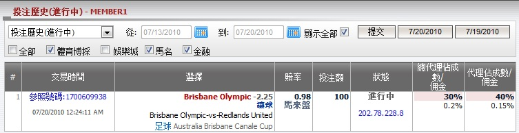
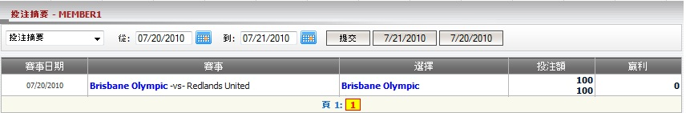
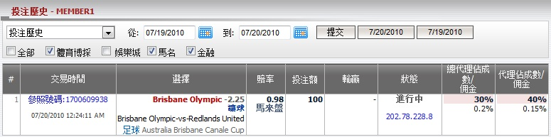
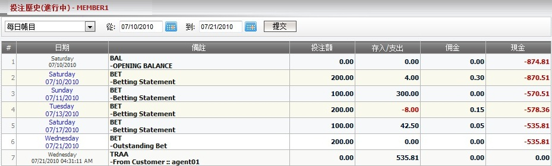

代理未結束交易
定義:
這份報告顯示會員於尚在進行中的注單的總投注額及總代理基於佔成數的共享數額。

圖 1.1
用詞註解:
-
未完成交易: 合計所有會員尚在進行中註單的投注額。
- 總代理佔成: 總代理基於佔成數所得到的共享數額。
- 娛樂城轉賬: 會員轉移到娛樂城的数額
- 娛樂城未完成交易: 娛樂城進行中游戲的未完成餘額 (此數值只出現在會員將金額調回IBC)。
您可點擊代理用戶名, 以查詢會員未完成交易及代理對於進行中注單的共享數額 (圖1.2)。

圖 1.2
用詞註解:
-
未完成交易: 合計所有會員尚在進行中註單的投注額。
- 代理佔成: 代理基於佔成數所得的數額。
如何理解報告:
在此報告, member1 投注於賽事 布里斯班奧林匹克 -vs- 紅土聯隊, 投注額 = 100, 賠率 = 0.98, 狀態 = 進行中, 總代理佔成 = 30% 和代理佔成 = 40%。 此外, 此會員也從體育博彩調動1,000至娛樂城進行遊戲, 並留下投注額 = 50的待續娛樂城遊戲。
我們有結果顯示在圖1.1和圖1.2:
- 會員未完成交易 = 投注額 * 賠率 = 100 * 1 = 100.
- 代理佔成 = 未完成交易 * 代理佔成 = 100 * 40% = 40.
- 總代理佔成 = 未完成交易 * 總代理佔成 = 100 * 30% = 30.
- 娛樂城未完成交易 = 50.
要深入了解這些進行中的注單, 點擊未完成交易數額查看投注歷史 (進行中) (圖1.3)。在進行中的注單頁面, 您也能夠查看:
1. 投注歷史(進行中):

圖 1.3
2. 投注摘要:
- 這個列表包含根據投注類別的所有注單: member1投注於亞洲盤, 單雙, 大小盤, 上半場亞洲盤, 上半場大小盤, 這份報告根據賽事及交易時間分類。

圖 1.4
3. 投注歷史:
- 這個列表包含member1所有注單包括已結算及進行中的注單。

圖 1.5
4. 每日賬目:
- 這份報告總結了所有的交易, 然後投入每日記錄在案。每日記錄餘額為總結當前日期的最新余額。

圖 1.6
在上圖中, member1至07/09/2010 星期五的輸贏總額將被總結並顯示為07/10/2010 星期六的期初餘額。
用詞註解
- Bal-Opening balance: 總計所有輸贏及轉賬交易至期初餘額日期之前。
- Bet-Betting statement: 總計有輸贏的所有投注。
- Traa-From Customer: 為了付款目的的轉賬數額。
- Bet-Outstanding Bet: 總計所有尚在進行中的投注。
- Credit/debit: 輸贏數額或轉賬數額。
- Commission: 代理佣金。
如何理解報告
上方的每日賬目顯示以下細節:
-
星期六 07/10/2010, 為期初餘額日, Member1至該日的總餘額為 -874.81.
-
星期六 07/10/2010, Member1 投注 200, 贏額 4, 得到 0.3 的佣金額然後他/她的餘額 = -874.81 + 4 + 0.3= -870.51.
-
星期日 07/11/2010, Member1 投注 100, 贏額 300, 得到 0 的佣金所以他/她的餘額 = -870.51 + 300 + 0 = -570.51.
-
星期二 07/13/2010, 投注 200, 輸額 8, 得到0.15的佣金所以他/她的餘額 = -570.51 - 8 + 0.15 = -578.36.
-
星期六 07/17/2010, 投注 100, 贏額 42.5, 得到0.05的佣金所以他/她的餘額 = -578.36 + 42.5 + 0.05 = -535.81.
- 星期三 07/21/2010, Member1 投注 200 而這些注單仍在進行中, 所以他的餘額還是 -535.81.
- 星期三 07/21/2010, agent01 轉賬 535.81 到member1, 所以他/她的最新餘額 = -535.81 + 535.81 = 0.